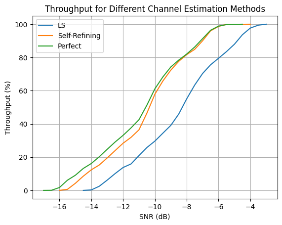

Evaluating Communication Throughput with HARQ
This notebook evaluates end-to-end communication performance using Hybrid Automatic Repeat reQuest (HARQ) and measures the resulting system throughput across a range of signal-to-noise ratio (SNR) values.
The evaluation compares multiple channel estimation methods, including the trained neural network and conventional estimation techniques, within a complete communication pipeline. When decoding errors occur, HARQ retransmissions are used to recover the transmitted data. The throughput achieved by each method is then calculated by accounting for both successful transmissions and the retransmissions required to achieve reliable communication.
Unlike the NMSE evaluation, which measures channel estimation accuracy, and the BLER evaluation, which measures decoding reliability, the HARQ evaluation provides a system-level performance metric that reflects the practical efficiency of the receiver. The resulting throughput curves demonstrate how improvements in channel estimation translate into increased data rates under realistic communication conditions.
[1]:
import numpy as np
import time, os, torch
import matplotlib.pyplot as plt
from neoradium import BandwidthPart, PDSCH, CdlChannel, AntennaPanel, random, SnrScheduler
from ChEstNet import ChEstNet
from ChEstUtils import estimateChannelML, getPseudoPilotIndices
[2]:
# Load the trained model
modelPath = 'Models/Pretrained.pth' # Use the pre-trained model
# modelPath = 'Models/Trained.pth' # Use the model trained in the previous step (see MLChEstTrain.ipynb)
device = "cuda:0" if torch.cuda.is_available() else "mps" if torch.backends.mps.is_available() else "cpu"
model = ChEstNet(device) # Instantiate the model on the target device
model.loadParams(modelPath); # Load the trained model parameters
[3]:
# Calculate communication throughput with HARQ
seed = 123
# Note:
# Using maxSlots = 2000 may cause this experiment to take a long time to complete.
# You can use a smaller value to obtain quicker (though less precise) results. You may
# also use a larger increments for the 'SnrScheduler' below for a coarser set of SNR values.
maxSlots = 2000 # Number of slots
snrScheduler = SnrScheduler(-13,0.5,fastStep=1) # Start at -13 dB, use increments of 0.5 dB
bwp = BandwidthPart(numRbs=45, spacing=30) # Create a BandwidthPart object
# Create a two-layer PDSCH object with type-2 DMRS on symbols 2 and 11
pdsch = PDSCH(bwp, numLayers=2, modulation="16QAM")
pdsch.setDMRS(configType=2, additionalPos=1)
# Create the HARQ entity and its internal LDPC codec object
harq = pdsch.getHarq(coderates=490/1024, # Coderate used by the LDPC codec
numIter=2, # Same as the paper (Default is 5)
harqType="CC", # Use chase combining (CC)
numProc=16) # Number of HARQ processes
# Create the channel model
channel = CdlChannel(bwp, 'C', delaySpread=300, carrierFreq=4e9, dopplerShift=5,
txAntenna = AntennaPanel([2,4], polarization="x"), # 16 TX antennas
rxAntenna = AntennaPanel([1,2], polarization="x")) # 4 RX antennas
def equalizeAndDecode(rxGrid, chanEst, errVar=None):
eqGrid, llrScales = pdsch.equalize(rxGrid, chanEst, errVar) # Equalization
llrs = pdsch.getLLRs(eqGrid, llrScales) # Demodulation (to LLRs)
# This is important:
# During the refinement loop, decoding must use the HARQ decode buffer for
# retransmissions without modifying the HARQ state. To do this, we save the
# current HARQ decode buffer, call the LDPC decoder with the HarqCW object so
# that it uses the HARQ buffer, and then restore the saved buffer. This allows
# the decoder to use the HARQ combining state while leaving the HARQ object
# unchanged.
harqCw = harq.curProcess.cws[0] # Since we have 2 layers, there is only one codeword
savedBuffer = None if harqCw.decBuffer is None else np.copy(harqCw.decBuffer) # Save HARQ buffer
decodedTxBlock, crcMatch = harqCw.ldpcCodec.decode(llrs[0], harqCw) # LDPC decoding
harqCw.decBuffer = savedBuffer # Restore HARQ buffer
cbErrors = (crcMatch[1:]==False).sum() # Number of code block errors
return [cbErrors, len(crcMatch)-1], [decodedTxBlock, crcMatch]
chEstMethods = ["LS", "Self-Refining", "Perfect"]
results = {}
for chEstMethod in chEstMethods:
print(f'\nEvaluating throughput with {chEstMethod} channel {"knowledge" if chEstMethod=='Perfect' else "estimation"}')
print("SNR(dB) Tx Bits Rx Bits Throughput(%) TX Blocks RX Blocks BLER(%) Avg. Retransmissions time(Sec.)")
print("------- ---------- ---------- ------------- --------- --------- ------- -------------------- ----------")
snrScheduler.reset()
for snrDb in snrScheduler:
random.setSeed(seed)
channel.restart() # Reset the channel and the bandwidth part
harq.reset() # Reset HARQ state and buffers
retransmissionsSaved = 0
t0 = time.monotonic() # Start the timer
for s in range(maxSlots): # The inner loop doing 'numSlot' transmissions
pdsch.initGrid() # Create and initialize PDSCH's internal grid
numBits = pdsch.getBitCapacity()[0] # Number of bits available in the resource grid
tbs = harq.ldpcCodec.txBlockSizes # Transport block sizes (for each codeword)
# Preparing the transport blocks
txBlocks = [] # Transport blocks, one per codeword.
for c in range(harq.numCW):
if harq.needNewData[c]: txBlocks += [ random.bits(tbs[c]) ] # Create random bits for new transmissions
else: txBlocks += [ None ] # Set to None indicating a retransmission
# The 'harq.encode' function returns a coded, rate-matched bitstream, ready for transmission/retransmission
rateMatchedCBs = harq.encode(txBlocks, numBits)
pdsch.setPdschData(rateMatchedCBs) # Map/modulate the data to the resource grid
channelMatrix = channel.getChannelMatrix() # Get perfect channel matrix
precoder = pdsch.getPrecodingMatrix(channelMatrix) # Get precoding matrix
txGrid = bwp.createGrid(channelMatrix.shape[3]) # Create the transmitted resource grid
pdsch.precodeTo(txGrid, precoder) # Precode PDSCH data into the txGrid
rxGrid = txGrid.applyChannel(channelMatrix) # Apply the channel in the frequency domain
noisyRxGrid = rxGrid.addNoise(snrDb=snrDb) # Add noise
errVar = None # Only used for LS channel estination
if chEstMethod == "Perfect":
pcChannelMatrix = channel.getEffChannel(channelMatrix, precoder) # Ground-truth effective channel
elif chEstMethod == "LS":
pcChannelMatrix, errVar = pdsch.estimateChannel(noisyRxGrid) # LS channel estimation using DMRS
elif chEstMethod == "Self-Refining":
# ML channel estimation using DMRS only
dmrsIdx = pdsch.grid.getReIndexes("DMRS")
pcChannelMatrix = estimateChannelML(model, dmrsIdx, pdsch.grid, noisyRxGrid)
blerInfo, decodeInfo = equalizeAndDecode(noisyRxGrid, pcChannelMatrix)
cbErrors, numCB = blerInfo
decodedTxBlock, crcMatch = decodeInfo
# Now try using pseudo-pilots
# Pseudo-pilots are relevant only when cbErrors ∈ {1,...,numCB-1}
relevantCbErrors = np.arange(1,numCB)
orgCbErrors = cbErrors
while cbErrors in relevantCbErrors:
pseudoPilotIndices = getPseudoPilotIndices(pdsch, harq.ldpcCodec, decodedTxBlock, crcMatch)
allPilotIndices = tuple(np.append(pseudoPilotIndices[i],dmrsIdx[i]) for i in [0,1,2])
pcChannelMatrix = estimateChannelML(model, allPilotIndices, pdsch.grid, noisyRxGrid)
blerInfo, decodeInfo = equalizeAndDecode(noisyRxGrid, pcChannelMatrix)
if blerInfo[0] >= cbErrors: break # No improvement or getting worse
cbErrors = blerInfo[0]
decodedTxBlock, crcMatch = decodeInfo
retransmissionsSaved += 1*(cbErrors==0 and orgCbErrors>0)
# Use the channel matrix (with precoding effect) to equalize the received resource grid
eqGrid, llrScales = pdsch.equalize(noisyRxGrid, pcChannelMatrix, errVar)
# Demodulate the equalized resource grid (eqGrid) to get the Log-Likelihood values
llrs = pdsch.getLLRs(eqGrid, llrScales)
# Use HARQ entity to decode the LLRs to transport blocks
decodedTxBlocks, crcMatches = harq.decode(llrs)
# Get the statistics from HARQ entity and print them:
print(f"{snrDb:^7.2f} {harq.totalTxBits:^10d} {harq.totalRxBits:^10d} {harq.throughput:^13.2f} "
f"{harq.totalTxBlocks:^9} {harq.totalRxBlocks:^9d} {harq.bler:^7.2f} {harq.meanRetransmissions:^20.3f} "
f"{time.monotonic()-t0:^-10.3f}", end="\r")
channel.goNext()
harq.goNext()
snrScheduler.setData(harq.bler, harq.throughput)
print("")
results[chEstMethod] = snrScheduler.getSnrsAndData()
Evaluating throughput with LS channel estimation
SNR(dB) Tx Bits Rx Bits Throughput(%) TX Blocks RX Blocks BLER(%) Avg. Retransmissions time(Sec.)
------- ---------- ---------- ------------- --------- --------- ------- -------------------- ----------
-13.00 53264000 3275736 6.15 2000 123 93.85 2.980 532.557
-13.50 53264000 1304968 2.45 2000 49 97.55 3.000 537.419
-14.00 53264000 133160 0.25 2000 5 99.75 3.000 537.658
-14.50 53264000 0 0.00 2000 0 100.00 3.000 538.004
-15.00 53264000 0 0.00 2000 0 100.00 3.000 538.731
-12.50 53264000 5379664 10.10 2000 202 89.90 2.865 536.027
-12.00 53264000 7323800 13.75 2000 275 86.25 2.669 539.747
-11.50 53264000 8468976 15.90 2000 318 84.10 2.526 543.503
-11.00 53264000 11158808 20.95 2000 419 79.05 2.192 551.229
-10.50 53264000 13742112 25.80 2000 516 74.20 1.893 588.755
-10.00 53264000 15792776 29.65 2000 593 70.35 1.732 575.173
-9.50 53264000 18322816 34.40 2000 688 65.60 1.578 574.993
-9.00 53264000 20826224 39.10 2000 782 60.90 1.447 578.255
-8.50 53264000 24474808 45.95 2000 919 54.05 1.141 594.755
-8.00 53264000 29348464 55.10 2000 1102 44.90 0.795 620.993
-7.50 53264000 33742744 63.35 2000 1267 36.65 0.565 647.310
-7.00 53264000 37471224 70.35 2000 1407 29.65 0.414 664.624
-6.50 53264000 40240952 75.55 2000 1511 24.45 0.321 683.405
-6.00 53264000 42344880 79.50 2000 1590 20.50 0.252 699.462
-5.50 53264000 44475440 83.50 2000 1670 16.50 0.195 710.883
-5.00 53264000 46845688 87.95 2000 1759 12.05 0.133 722.943
-4.50 53264000 49881736 93.65 2000 1873 6.35 0.067 740.728
-4.00 53264000 52038928 97.70 2000 1954 2.30 0.023 755.352
-3.50 53264000 52944416 99.40 2000 1988 0.60 0.006 760.037
-3.00 53264000 53264000 100.00 2000 2000 0.00 0.000 761.469
-2.50 53264000 53264000 100.00 2000 2000 0.00 0.000 758.338
Evaluating throughput with Self-Refining channel estimation
SNR(dB) Tx Bits Rx Bits Throughput(%) TX Blocks RX Blocks BLER(%) Avg. Retransmissions time(Sec.)
------- ---------- ---------- ------------- --------- --------- ------- -------------------- ----------
-13.00 53264000 10386480 19.50 2000 390 80.50 2.252 1161.162
-13.50 53264000 8122760 15.25 2000 305 84.75 2.559 1108.626
-14.00 53264000 6578104 12.35 2000 247 87.65 2.736 1071.672
-14.50 53264000 4554072 8.55 2000 171 91.45 2.917 1079.896
-15.00 53264000 2263720 4.25 2000 85 95.75 3.000 1055.577
-15.50 53264000 319584 0.60 2000 12 99.40 3.000 1037.256
-16.00 53264000 0 0.00 2000 0 100.00 3.000 996.445
-16.50 53264000 0 0.00 2000 0 100.00 3.000 999.791
-12.50 53264000 12756728 23.95 2000 479 76.05 1.964 1168.617
-12.00 53264000 15100344 28.35 2000 567 71.65 1.740 1163.537
-11.50 53264000 16991216 31.90 2000 638 68.10 1.596 1170.653
-11.00 53264000 19414728 36.45 2000 729 63.55 1.461 1204.139
-10.50 53264000 24794392 46.55 2000 931 53.45 1.084 1369.975
-10.00 53264000 30839856 57.90 2000 1158 42.10 0.707 1401.985
-9.50 53264000 35047712 65.80 2000 1316 34.20 0.514 1392.512
-9.00 53264000 38536504 72.35 2000 1447 27.65 0.373 1361.042
-8.50 53264000 41359496 77.65 2000 1553 22.35 0.285 1328.201
-8.00 53264000 43516688 81.70 2000 1634 18.30 0.220 1269.400
-7.50 53264000 45194504 84.85 2000 1697 15.15 0.174 1261.194
-7.00 53264000 47964232 90.05 2000 1801 9.95 0.109 1302.307
-6.50 53264000 51133440 96.00 2000 1920 4.00 0.040 1322.477
-6.00 53264000 52544936 98.65 2000 1973 1.35 0.013 1271.644
-5.50 53264000 53210736 99.90 2000 1998 0.10 0.001 1227.850
-5.00 53264000 53210736 99.90 2000 1998 0.10 0.001 1229.006
-4.50 53264000 53237368 99.95 2000 1999 0.05 0.001 1232.342
-4.00 53264000 53264000 100.00 2000 2000 0.00 0.000 1222.478
-3.50 53264000 53264000 100.00 2000 2000 0.00 0.000 1218.688
Evaluating throughput with Perfect channel knowledge
SNR(dB) Tx Bits Rx Bits Throughput(%) TX Blocks RX Blocks BLER(%) Avg. Retransmissions time(Sec.)
------- ---------- ---------- ------------- --------- --------- ------- -------------------- ----------
-13.00 53264000 13156208 24.70 2000 494 75.30 1.965 555.308
-13.50 53264000 10759328 20.20 2000 404 79.80 2.292 544.844
-14.00 53264000 8602136 16.15 2000 323 83.85 2.556 536.411
-14.50 53264000 7030848 13.20 2000 264 86.80 2.683 537.246
-15.00 53264000 4847024 9.10 2000 182 90.90 2.913 529.748
-15.50 53264000 3249104 6.10 2000 122 93.90 3.000 536.239
-16.00 53264000 905488 1.70 2000 34 98.30 3.000 536.731
-16.50 53264000 26632 0.05 2000 1 99.95 3.000 538.074
-17.00 53264000 0 0.00 2000 0 100.00 3.000 537.050
-17.50 53264000 0 0.00 2000 0 100.00 3.000 538.932
-12.50 53264000 15499824 29.10 2000 582 70.90 1.756 560.218
-12.00 53264000 17630384 33.10 2000 662 66.90 1.623 563.326
-11.50 53264000 20027264 37.60 2000 752 62.40 1.486 571.696
-11.00 53264000 22663832 42.55 2000 851 57.45 1.301 578.721
-10.50 53264000 27351064 51.35 2000 1027 48.65 0.932 600.971
-10.00 53264000 32570936 61.15 2000 1223 38.85 0.620 624.290
-9.50 53264000 36352680 68.25 2000 1365 31.75 0.457 642.241
-9.00 53264000 39548520 74.25 2000 1485 25.75 0.341 659.971
-8.50 53264000 41758976 78.40 2000 1568 21.60 0.270 671.930
-8.00 53264000 43703112 82.05 2000 1641 17.95 0.214 681.947
-7.50 53264000 45940200 86.25 2000 1725 13.75 0.157 694.006
-7.00 53264000 48630032 91.30 2000 1826 8.70 0.093 709.748
-6.50 53264000 51319864 96.35 2000 1927 3.65 0.037 723.073
-6.00 53264000 52651464 98.85 2000 1977 1.15 0.012 727.479
-5.50 53264000 53130840 99.75 2000 1995 0.25 0.003 731.925
-5.00 53264000 53210736 99.90 2000 1998 0.10 0.001 731.507
-4.50 53264000 53264000 100.00 2000 2000 0.00 0.000 732.959
-4.00 53264000 53264000 100.00 2000 2000 0.00 0.000 734.751
[4]:
for i,chEstMethod in enumerate(results.keys()):
plt.plot(results[chEstMethod][0], results[chEstMethod][2], label=chEstMethod)
plt.legend()
plt.title("Throughput for Different Channel Estimation Methods")
plt.grid()
plt.xlabel("SNR (dB)")
plt.ylabel("Throughput (%)")
plt.show()

[ ]:
[ ]:
[ ]: